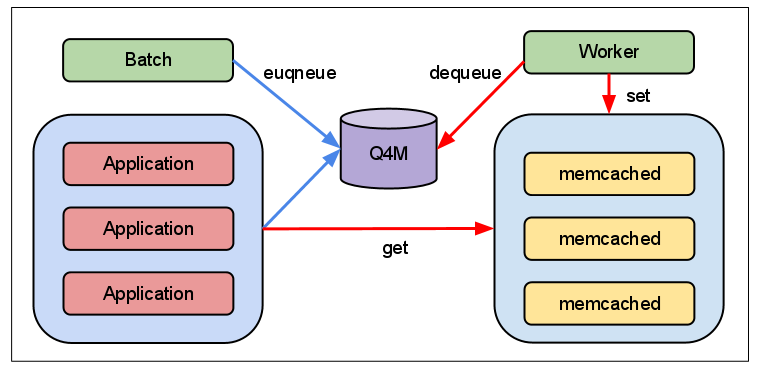
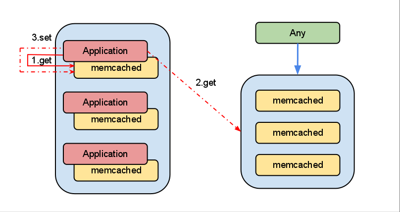
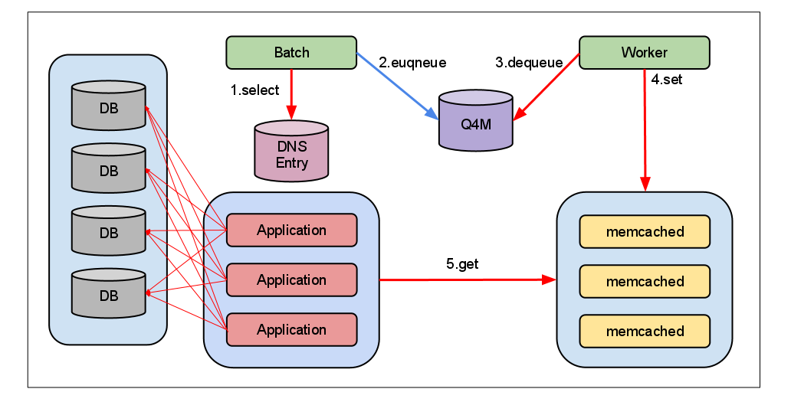
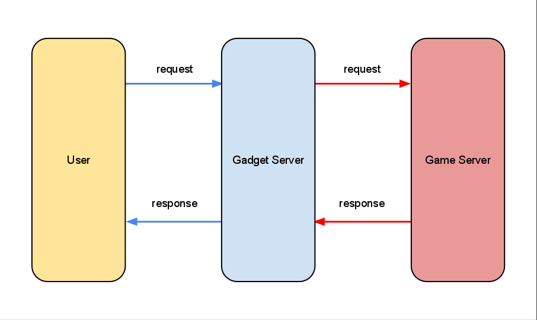
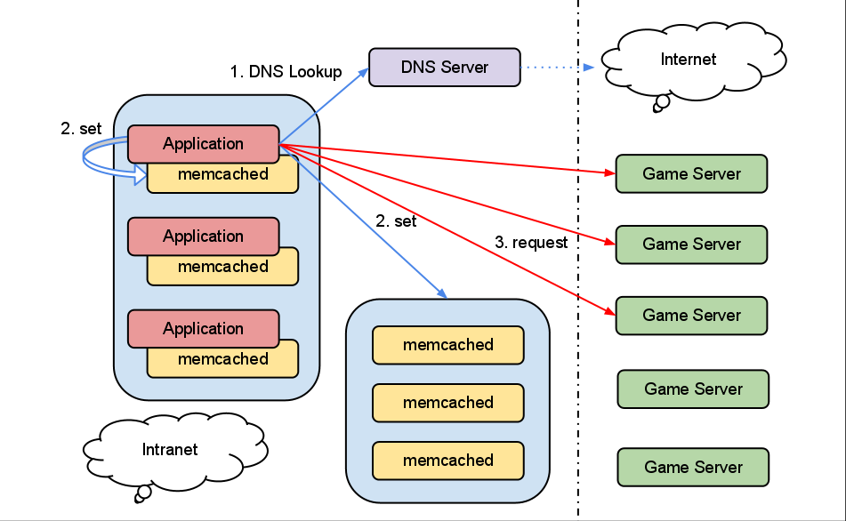

YAPC::Asia 2011 - 2011/10/15
Yuji Shimada (xaicron)
etc...
あと、gihyo.jp に 「高速なWeb APIの実装とテスト―Mobage APIを支えるノウハウ」という記事が上がっているので、興味があったら見てみてください！
はい
Mobage オープンプラットフォームではここ半年ぐらいで、トラフィックが以前よりふえて、負荷が高まって来ました。
そこで、負荷を軽減するために、いろんな所にキャッシュを使うことにしました。
どういう問題が起きて、どのようにキャッシュを利用することで解決したのか。
というような話を漫然とします。
キャッシュと一口に言ってもいろいろありますが、基本的には Mobage では memcached を幅広く利用しているので
そのへんの話が主になります。
基本的にイケてない泥臭い話がメインになります
第一部
あれ、私のキャッシュ
更新されてない...？
みなさん、Cache::Memcached::Fast の set とか delete の戻り値見てますか？
POD には
Return: boolean, true for positive server reply, false for negative server reply, or undef in case of some error.
とか書かれてますね。
つまり、set とか delete がよくわからん理由で失敗すると、undef が返ってくるんですよ！
キャッシュ更新するのに3秒待つとか悲しい
(しかも更新されてない)
Cache::Memcached::Fast のデフォルトの timeout
| オプション | 時間 | 説明 |
|---|---|---|
| connect_timeout | 250ms | コネクションを貼る時間 |
| io_timeout | 100ms | データを取ってくる時間 |
Cache::Memcached::Fast のデフォルトの timeout
| オプション | 時間 | 説明 |
|---|---|---|
| connect_timeout | 250ms | コネクションを貼る時間 |
| io_timeout | 100ms | データを取ってくる時間 |
永続接続をする
永続接続をする
大事なことなので2回言いました
永続接続したいなぁ
ちなみに、io_timeout は超大量のデータをとってきたりすると発生するかもしれません。
なんだか悲しいですね。
そこでリトライですよ！
大体こんな感じ
package MyApp::Cache::Memcached;
use strict;
use warnings;
use Sub::Retry 0.03 qw(retry);
use parent 'Cache::Memcached::Fast';
our $MAX_RETRY = 3;
our $RETRY_INTERVAL = 0.05;
for my $method (qw(set delete)) {
no strict 'refs';
*$method = sub {
use strict 'refs';
my $self = shift;
# 失敗したら50ms待ち、3回までリトライする
my $ret = retry $MAX_RETRY, $RETRY_INTERVAL, sub {
$self->SUPER::$method(@_);
}, sub {
my $ret = shift;
defined $ret ? 0 : 1;
};
return $ret;
};
}
1;
必要に応じて、add や incr などを追加すればいいでしょう。
ので、3回ぐらいのリトライで実用上は問題ないんじゃないかと思います
ちなみに get の場合は、本当にデータがない場合も undef が返ってくるので判定できませんが、
おんなじようにリトライしといてもいいんじゃないかと思います。
というかしてます。
キャッシュを
workerで作成
Mobage はいろんなコンポーネントがあって、いろんな人が見るキャッシュとかがあります
で、その人達がみんなで「キャッシュなかったら生成するー」とかを書くのはめんどいよねってことがあるので、キャッシュ生成専用の worker を立てやってるところがあります。
負荷対策の本筋とは直接は関係ありませんが、この仕組があることで、あとあといろいろ便利だったのでちょろっと紹介します。
キャッシュ生成はだいたいこの二種類
アプリ側でキャッシュがなかったらDBとかから引いてきて作るのこと
以下のような method を生やしておくと便利
sub get_fallback {
my ($self, $key, $callback, $expires) = @_;
my $value = $self->get($key);
return $value if defined $value;
unless (defined $value) {
$res = $callback->($key);
}
$self->set($key, $value, $expires) if defined $value;
return $value;
}
# 使用例
my $value = $memd->get_fallback($key, sub {
# キャッシュにヒットしなかった場合の処理
}, $expires);
あとは普通のことなので省略
というようなデータを worker で定期的に作成 + 変更があった場合は enqueue することで更新する

Mobage では、各ゲームの情報なんかを worker で生成してます。
あとでこの仕組みを色々と使った例を紹介します。
第一部・完
第二部
memcached への
トラフィックを削減する
先ほど例に上げた、config を memcached に入れる運用はよくやっていると思いますが、
よく利用される key へのアクセスが偏ってしまうという問題があります。
例えば、key の偏りをなくすために、以下のように、key に suffix をつけて保存先を分散する方法があります。
sub set {
my ($self, $key, $value, $expires) = @_;
for my $i (1..30 ) {
$memd->set("$key:$i", $value, $expires);
}
}
sub get {
my ($self, $key) = @_;
$memd->get(sprintf '%s:%s', $key, int(rand(30)+1));
}
わりと効率が悪いです
そこで、全部のアプリサーバーに
memcached を立てることにしました
すいません、常識かもしれませんが、今年までローカルに立ってなかったんです...

ローカル memcached を利用することで、リモートの memcached へのトラフィックが激減し、さらにローカルに永続接続することで、スループットも向上しました。
とりわけ重要なのは、キャッシュの不整合が起きる可能性。
これはキャッシュの時間を極端に短くすることで対応。
数秒とか。それだけでもかなりの効果あり。
CPU 使用率は実際にはほとんど上がらない。
「いまんところ使わないけど、とりあえずアプリサーバーに memcached 立てておくかー」ぐらいのゆるふわな感じでやっとくと、後々便利かもしれません。
はい
大体半分ぐらい来ました
って書いとくといいらしいです
DNS のキャッシュ
の2種類のお話
内部向け DNS のキャッシュ
きのう @riywo さんが話して若干被ってるかもしれませんが、僕の方が圧倒的に早くスライドを書き終えていたので、パクりはあちらです。
あと、オープンプラットフォームは実装が、怪盗なんたらとかとは全く別なので、違う方法でやってるので多分へいき。
ちなみに、LVS とか MyDNS のいいところは
基本的に、アプリの改修なくかつ無停止に変更できるのがいい
fujiwara 組長のが昨日はなしていた、HAproxy とかは再起動が必要なので、こんかいのケースには使えない
しかし、既存の負荷分散だと厳しくなってきたので、なんとかしないといけない。
真っ先に思いたのは dnscache や、unbound などの DNS キャッシュをローカルに立てること
しかし、どちらも重み付けされたラウンドロビンができそうにない
＼(^o^)／
結局アプリ側で自力で DB への負荷分散をやることに
イケてない話ばかりですいません
というバッチを作成し、数秒おきに実行する

図にするとこんな感じ
既存のコードを以下のような感じに書き換える
package MyAPP::DB;
use DBI;
use Data::WeightedRoundRobin;
sub connect {
my ($self, $connect_info) = @_;
my ($scheme, $driver, $driver_dsn) =
(DBI->parse_dsn($connect_info->{dsn}))[0,1,4];
my $driver_hash = {
map { split '=', $_, 2 } split ';', $driver_dsn
};
# fqdn を ip に書き換える
my $ip = $self->resolve($driver_hash->{host});
$driver_hash->{host} = $ip;
# dsn を再構築
$driver_dsn = join ';', map {
"$_=$driver_hash->{$_}"
} keys %$driver_hash;
$connect_info->{dsn} =
sprintf '%s:%s:%s', $scheme, $driver, $driver_dsn;
# 置き換えられた ip へ接続
DBI->connect(@$connect_info{qw/dsn user password attr/});
}
sub resolve {
my ($self, $fqdn) = @_;
do {
$self->{wrr}{$fqdn} ||= Data::WeightedRoundRobin->new(
$self->fetch_dns_entry($fqdn)
);
}->next || $fqdn; # 取れなかった場合、fqdn を返す
}
sub fetch_dns_entry {
my ($self, $fqdn) = @_;
# 実際には プロセス内キャッシュ -> ローカルキャッシュ
# -> リモートキャッシュの順にフォールバックする
my $entry = $cache->get($fqdn);
}
PV x 数回発生していた
DNS ルックアップが 0 になりました
☺
簡単にやってることをまとめると
っていうだけです。簡単ですね。
普通は LVS で事足りるんですが
外向けのDNSのキャッシュ
今まで、内部トラフィックの話をしてきましたが、
Mobage オープンプラットフォームには、Gadget Sever という docomo ゲートウェイみたいなサーバーがあります。
この人は、外部のサーバーに対してリクエストを行います。

そうだ、Furl にしよう！
それが悲劇の始まりであった...
いっぱいパッチ送ったよ...
DNS のキャッシュは Net::DNS::Lite + Cache::LRU を使えば良い感じに
以下のようにやるだけ
use Furl;
use Net::DNS::Lite;
use Cache::LRU;
# Net::DNS::Lite のキャッシュを有効に
$Net::DNS::Lite::CACHE = Cache::LRU->new(size => 1024);
my $furl = Furl->new(
# DNS ルックアップに Net::DNS::Lite を使う
inet_aton => \&Net::DNS::Lite::inet_aton,
);
...
これで問題ないかに見えたが、キャッシュのヒット率が悪いことが判明
とはいえ、DNS のルックアップは大幅に減った
だが、まだいける！

次回からは、
プロセス内キャッシュ -> ローカル -> リモート -> DNS ルックアップ
というかんじにフォールバック。
大体、DNS のルックアップが 1 / (サーバー x プロセス) ぐらいに。
実装は以下のような感じ
package MyApp::UserAgent;
use Furl;
use Net::DNS::Lite;
use Socket;
use List::Util qw(min);
my $NET_DNS_LITE = Net::DNS::Lite->new;
my $RR_TTL_IDX = 3;
my $RR_ADDRESS_IDX = 4;
sub request {
my ($self, $req) = @_;
my $furl = Furl->new(
inet_aton => sub {
my ($host, $timeout) = @_;
return $self->my_inet_aton($host, $timeout);
},
);
}
sub my_inet_aton {
my ($self, $host, $timeout) = @_;
my $iaddr;
my $ip_list = $self->fetch_ip_list($host, $timeout);
while (@$ip_list) {
# ランダムに ip を選択
my $idx = int rand @$ip_list;
$iaddr = Socket::inet_aton($ip_list->[$idx]);
last if defined $iaddr;
splice @$ip_list, $idx, 1; # 繋がらなかった人を削除
}
return $iaddr;
}
sub fetch_ip_list {
my ($self, $host, $timeout) = @_;
# プロセス内キャッシュ -> ローカル -> リモートにフォールバック
my ($ip_list, $ttl) = $self->cache->get($host);
unless ($ip_list) {
# A レコードを引く
for my $rr (
$NET_DNS_LITE->resolve($host, 'a', timeout => $timeout)
) {
$ttl = min $ttl, $rr->{RR_TTL_IDX];
push @$ip_list, $rr->[$RR_ADDRESS_IDX];
}
# キャッシュの生成
$self->cache->set($ip_list, $ttl);
}
retrun $ip_list;
}
本当はもっと色々やってますが、だいたいこんな感じで、外部のDNS をキャシュ
する予定です
すいません、リリース間に合いませんでした
第二部・完
おまけ
例えば、キャッシュを使わない
はい
いままでキャッシュの話してきて、なにいってんのこいつ？
キャッシュが必要とはいえ...
MySQL 5.6 の memcached プロトコルについてはよくわからないので省略
詳しくは
置き換えやすいタイプのキャッシュ
置き換えやすいタイプのキャッシュ
とはいえ、HandlerSocket は
とかあるので、当然ながら全ての memcached を置き換えることはできませんが、マッチする所では強力ですね。
まぁオープンプラットフォームはつかってないんですけどね...
今日のまとめ
トラフィックが増えてくると、よくわからないところでよくわからないキャッシュをいっぱい作らなきゃいけなくて大変なので、誰か助けてください。
俺達の戦いは
まだ始まったばかりだぜ！
ご清聴ありがとうございました
j or →: next
k or ←: prev
h or ↑: list
l or ↓: return
o or ↵: open
? or /: toggle this help